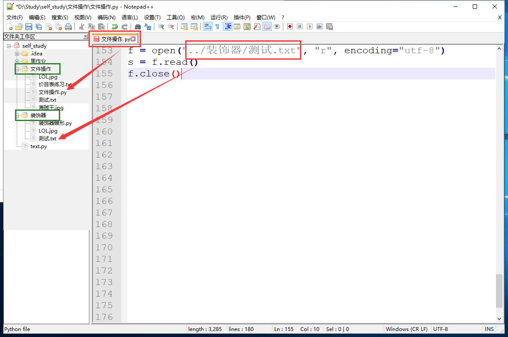

f = open(文件路径, 打开方式, 编码方式)
f = open("text.txt", mode="r", encoding="utf-8")
"""文件操作"""
f.close()with open(文件路径, 打开方式, 编码方式) as f:
with open(...) as f1, open(...) as f2:with open("text.txt", mode="r", encoding="utf-8") as f:
"""文件操作"""绝对路径：
path = "C:\Users\11582\Desktop\笔记\day08"相对路径
../path = "../装饰器/测试.txt"
转义：
\\代表
路径前加一个r
path = r"C:\Users\11582\Desktop\笔记\day08"mode可以省略，直接填入打开方式，若不填默认为只读"r"
| r | 只读 |
|---|---|
| w | 只写（清空写） |
| a | 追加（追加写） |
| rb | 以字节方式打开文件用于只读 |
| wb | 以字节方式打开文件用于只写（清空写） |
| ab | 以字节方式打开文件用于追加（追加写） |
| r+ | 读写 |
| w+ | 写读（清空写） |
| a+ | 追加写读（追加写） |
| r+b | 以字节方式打开文件用于读写 |
| w+b | 以字节方式打开文件用于写读（清空写） |
| a+b | 以字节方式打开文件用于追加（追加写） |
mode="r"
f = open("text.txt", "r", encoding="utf-8")
s = f.read()
f.close()
print(s) # 打印文件内容mode="w"
f = open("text.txt", "w", encoding="utf-8")
f.write("文件操作")
f.flush()
f.close() # 写入"文件操作"mode="a"
f = open("text.txt", "a", encoding="utf-8")
f.write("文件操作")
f.flush()
f.close() # 在文件末尾写入"文件操作"mode="rb"
f = open("LOL.jpg", "rb")
s = f.read()
f.close()
print(s) # 打印文件内容(二进制码)
mode="wb"
f = open("LOL.jpg", "rb")
s = f.read()
f.close()
f = open("皮肤.png", "wb")
f.write(s)
f.flush()
f.close()
mode="ab"
f = open("LOL.jpg", "rb")
s = f.read()
f.close()
f = open("LOL.jpg", "ab")
f.write(s)
f.flush()
f.close()
mode="r+"
f = open("text.txt", "r+", encoding="utf-8")
s = f.read()
f.write("文件操作") # 在文件末尾追加"文件操作"
f.flush()
f.close()
print(s)
f = open("text.txt", "r+", encoding="utf-8")
f.write("123") # 将文件中的"文"替换成"123" 一个中文对应三个字节
f.flush()
f.close()
mode="w+"
f = open("text.txt", "w+", encoding="utf-8")
f.write("文件操作")
f.flush()
f.close()
mode="a+"
f = open("text.txt", "a+", encoding="utf-8")
s.seek(0)
s = f.read()
f.write("文件操作")
f.flush()
f.close()
mode="r+b"
mode="w+b"
mode="a+b"
用来操作文件的媒介，文件操作的所有方法都针对于文件句柄
文件句柄是一个迭代器，可以进行for循环
| f.read() | 读取全部内容 |
|---|---|
| f.readline() | 读取一行内容 |
| f.readlines() | 读取全部内容 |
| f.close() | 关闭文件 |
| f.write() | 写入内容 |
| f.flush() | 刷新内容 |
| f.seek() | 移动光标 |
| f.tell() | 获取光标位置 |
| f.truncate() | 截断文件 |
f.read()
read(n)方法可填入参数n，读取n个字符f = open("text.txt", "r", encoding="utf-8")
s = f.read(3) # 读取前3个字符
s1 = f.read() # 读取剩余全部内容
f.close()
f.readline()
strip()删除f = open("text.txt", "r", encoding="utf-8")
s = f.readline() # 读取文件一行内容
f.close()
f.readlines()
f = open("text.txt", "r", encoding="utf-8")
s = f.readlines() # 读取文件全部内容，得到一个列表
f.close()
f.close()
f = open("text.txt", "r", encoding="utf-8")
s = f.read()
f.close() # 关闭文件句柄
f.write()
f = open("text.txt", "w", encoding="utf-8")
f.write("文件操作") # 写入"文件操作"
f.flush()
f.close()
f.flush()
f = open("text.txt", "w", encoding="utf-8")
f.write("文件操作")
f.flush() # 刷新缓冲区
f.close()
f.seek()
seek()方法有两个参数：
f = open("text.txt", "r", encoding="utf-8")
f.read()
f.seek(0) # 光标移动到开头
f.read()
f.close()
f.tell()
f = open("text.txt", "r", encoding="utf-8")
f.read()
f.seek(0) # 光标移动到开头
s1 = f.tell() # 开头位置
f.read()
s2 = f.tell() # 结尾位置
f.close()
f.truncate()
f = open("text.txt", "r", encoding="utf-8")
f.read()
f.seek(3)
f.truncate() # 第三个字符后面的内容全部被删除
f.close()
文件修改只能将原文件内容读取到内存中，将信息修改完毕之后，写到新的文件中，将原文件删除，并将新文件重命名成原文件的名字
需要导入os模块用来删除文件和重命名文件
import os
with open("text.txt", "r", encoding="utf-8") as f1,\
open("text副本.txt", "w", encoding="utf-8") as f2:
for line in f1:
new_line = line.replace("旧内容", "新内容")
f2.write(new_line)
os.remove("text.txt") # 删除原文件
os.rename("text副本.txt", "text.txt") # 重名命成原文件